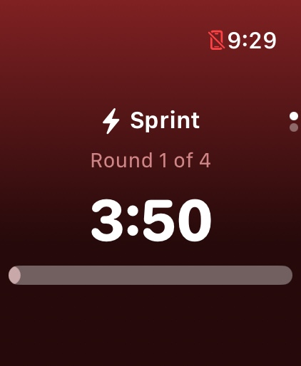
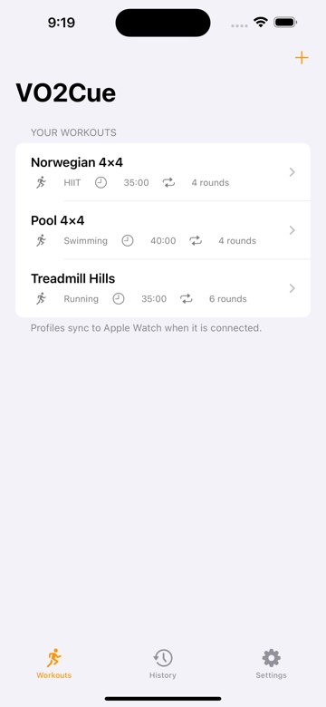
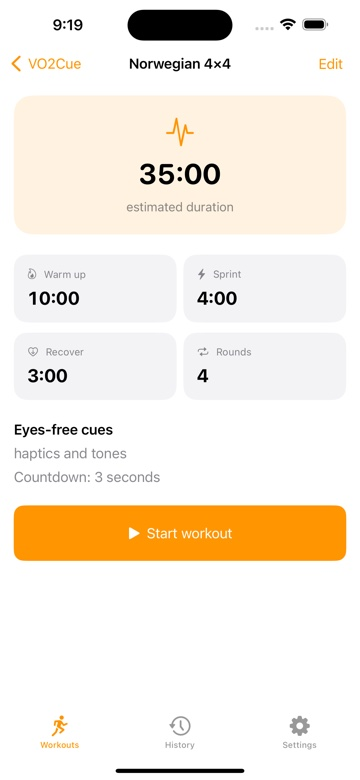
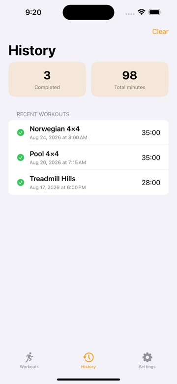

YOUR EYES-FREE INTERVAL COACH
Your effort.
Our cues.
Get into your workout. VO2Cue keeps the intervals moving with clear timers, Apple Watch haptics, tones, and optional voice cues.
For iPhone & Apple Watch · No account required


A cue when you don’t.
Swim · Run · Cycle · Row · Train
A LOOK INSIDE
Simple setup.
Clear focus.
Build the session that fits your day, follow each interval, and keep a record of the work you put in.

Your workout library
Start with the classic 4×4 or keep your own go-to sessions ready.

Every interval, your way
Set work, recovery, rounds, warmup, cooldown, and the cues you want.

Progress that stays yours
Review recent sessions and total minutes in your local workout history.
Actual app screenshots with example workouts and history.
YOUR FIRST SESSION
Ready in
a few taps.
Set it up on your iPhone. Train with your phone or start a session from your Apple Watch.
4 min hard effort + 3 min recovery between efforts, for 4 rounds.
35 minutes total · Optional cooldownChoose or create a workout
Open the Workouts tab and select a profile. Tap the + button to create one, or open a saved workout and tap Edit.
Set your intervals and cues
Choose your activity, work and recovery durations, repeat count, warmup, and cooldown. Enable haptics, tones, or voice cues and customize the cue labels.
Start and follow the cues
Tap Start workout on the workout detail screen. On Apple Watch, open VO2Cue and choose a workout; profiles sync from your iPhone when connected. Use Pause, resume, Skip, or End as needed.
Review your session
Open History after your workout. To also save completed workouts to Apple Health, open Settings, enable Save completed workouts, and tap Request Health access.
LESS CLOCK-WATCHING. MORE TRAINING.
Make your next
session count.
No account. No ads. No tracking.
Your profiles and VO2Cue history stay on your devices.
App Store